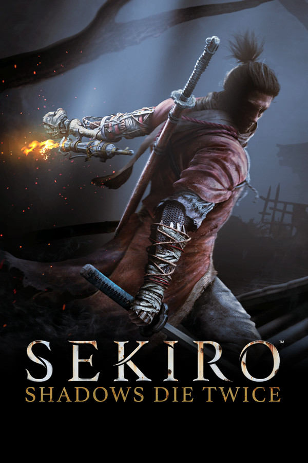
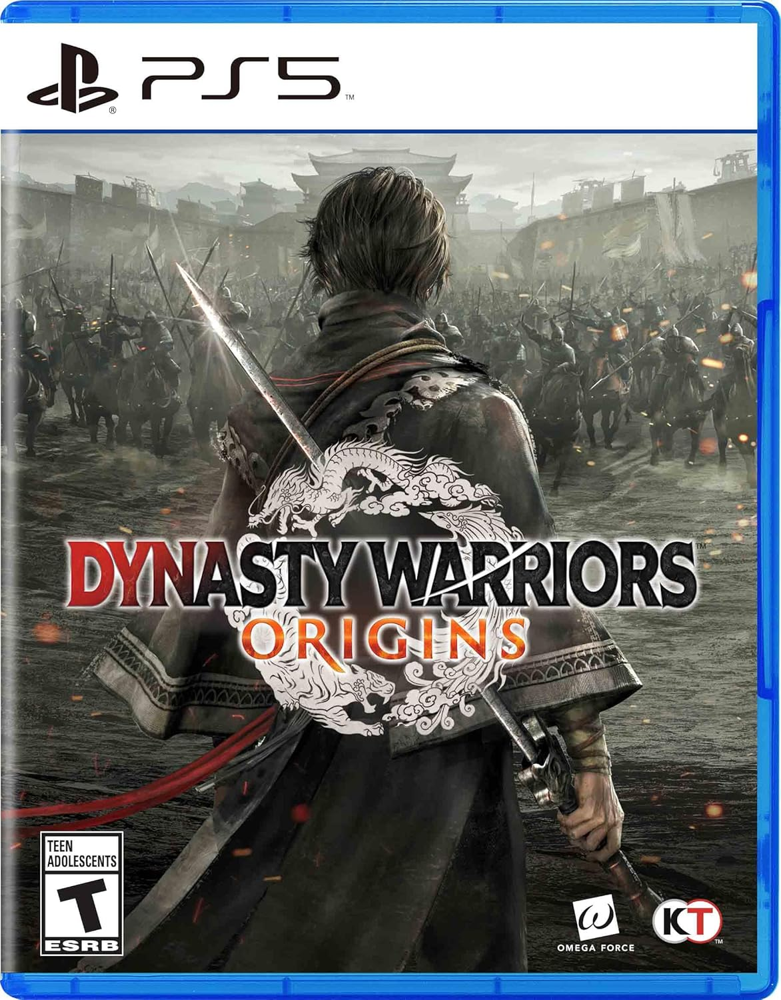
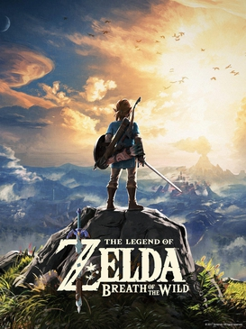
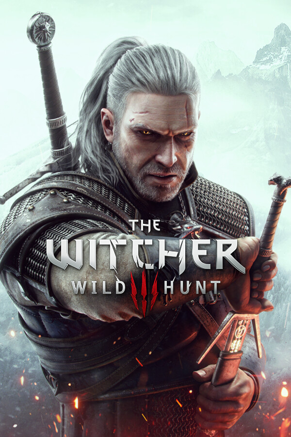
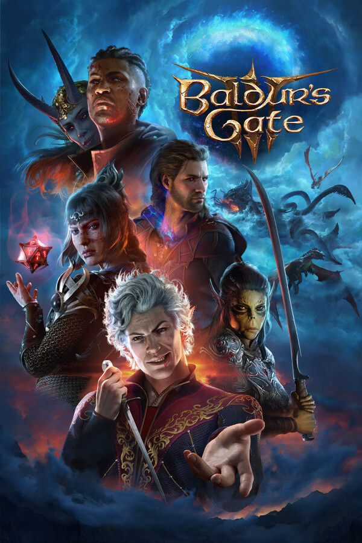
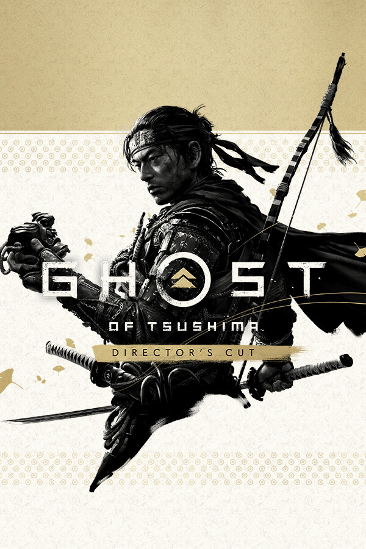
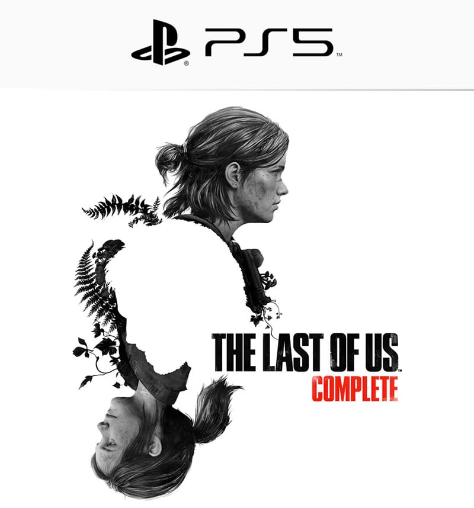
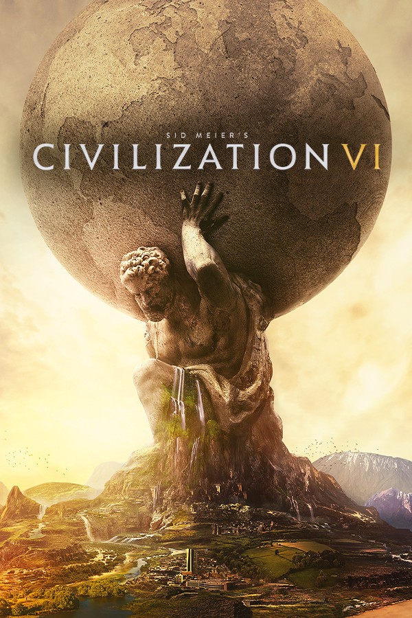
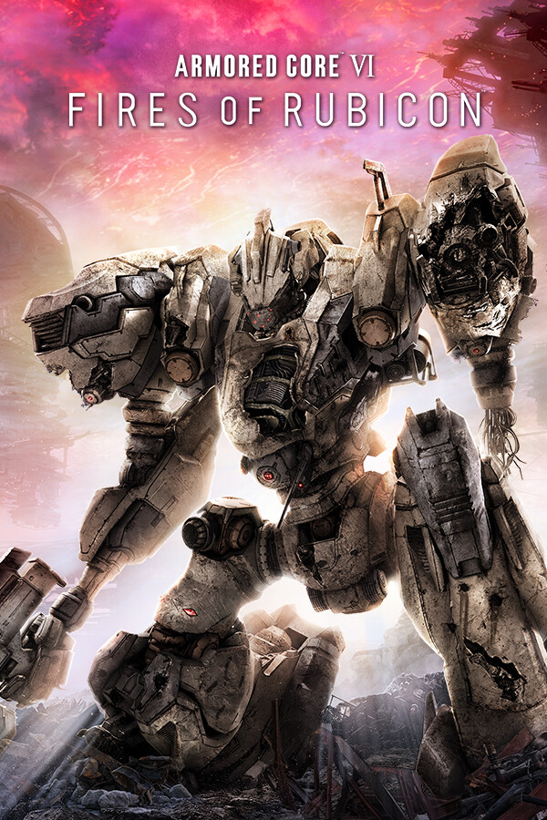
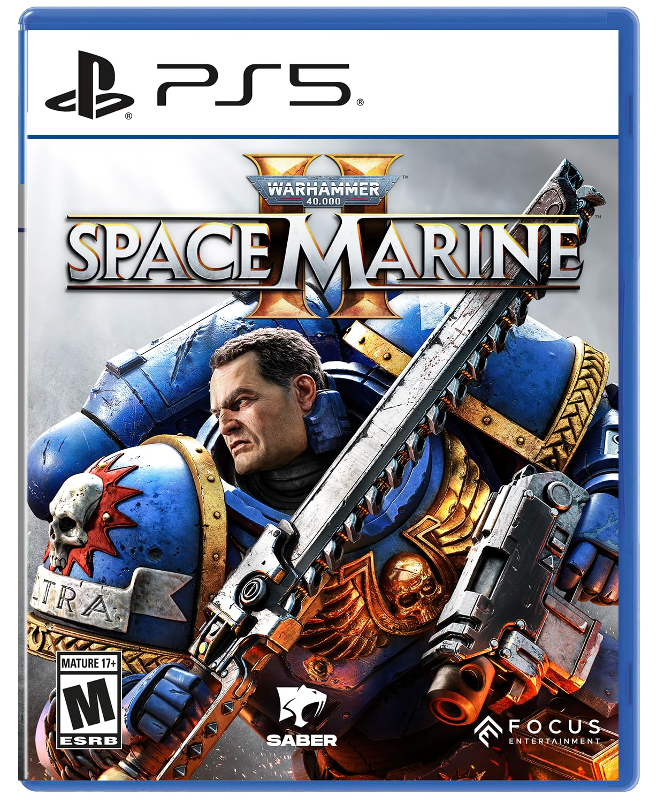

~/soulferryman $ whoami
董建宇Dong Jianyu
> 开源与开发者关系负责人
9 年开发者生态、开源增长与商业化经验，覆盖技术社区、B 端 SaaS、AI Agent 与具身智能。 擅长把数据集、工具链和社区机制组织成可持续增长的开源生态，让前沿技术真正抵达开发者。
/etc/about.md
技术、社区和真实世界之间的接口
我长期工作在开发者关系、开源生态和商业化的交界处：既理解产品和技术的真实复杂度，也理解开发者为什么愿意投入时间。过去 9 年，我连续在技术社区、B 端 SaaS、AI Agent 与具身智能领域，完成了多次开发者产品与开源社区从 0 到 1 的搭建。
当前在北京人形机器人创新中心负责开源生态，关注具身智能开源项目如何从发布走向行业采用——以及如何用社区机制、赛事体系和自动化运营，让生态实现自增长。
core.skills
- 开源生态战略
- 开发者产品 0→1
- 开发者增长
- 开源商业化
- Contributor 与伙伴生态
- AI Agent 生态运营
- Python / GitHub Actions
- 赛事与黑客松策划
/var/metrics
一些可以被量化的结果
/var/repos --open-source
主导与运营的开源项目
robomind.dataset20M+ downloadsRoboMIND
覆盖 107k 条真实操作轨迹、479 种任务、96 类物体的具身智能数据集，全球累计下载超 2000 万次。
- OS2ATC 最佳开源智能突破奖
- 信通院 OSCAR 典型案例 · EAI-100 十大数据集
tienkung.labfield-provenTienKung-Lab
面向全尺寸人形机器人的强化学习运控框架，被多所高校与机器人企业采用并二次开发。
- 亦庄半程马拉松 · 世界机器人运动会
- RL locomotion / AMP rewards
wow.worldmodel14B paramsWoW 世界模型
基于 200 万真实机器人交互轨迹训练的 14B 参数生成式世界模型，实现物理一致的想象、推理与行动。
- World-Omniscient World Model
- open weights on Hugging Face
xr-1.vlanational standardXR-1 VLA 模型
国内首个通过具身智能国标测试的模型，以多模态视觉-动作统一表征打通"感知"与"执行"。
- vision-action unified representation
- see → act, autonomously
pelican-vl.brainlargest openPelican-VL 1.0
当前最大规模的开源具身多模态"大脑"模型，深度融合数据动力与自适应学习机制。
- embodied multimodal brain
- open-source release
flyfish.platform¥1M+ dealsFlyFish
从 0 到 1 孵化低代码数据可视化平台，获得 GitHub / Gitee 2000+ Star、10000+ Demo 用户，并从开源项目转化出 100 万元以上商单。
- Gitee 最有价值开源项目
- 中国开源云联盟优秀开源项目奖
$ git log --career --oneline
职业经历
-
北京人形机器人创新中心 开源与开发者关系负责人
负责具身智能开源生态与开发者关系，围绕 RoboMIND、TienKung-Lab 等项目建设社区和协作机制。推动开发者产品与具身智能黑客松落地。
-
百度 产品运营经理 · Agent 生态
负责文心智能体平台 Agent Builder 冷启动，通过内容、课程和社区专家体系推动开发者增长。
-
云智慧 开源运营经理
带领团队孵化 FlyFish 开源项目，推动社区增长，并实现从开源使用到商业订单的转化。
-
早期经历 极客邦科技（InfoQ） · 虎嗅 · 开课吧
先后从事开发者社区、科技社群及技术内容运营，积累了用户增长、行业讲师合作与课程策划经验。
~/player/loadout.json
玩家档案 Player Profile
重度游戏玩家。欣赏任天堂的设计哲学——清晰的规则、即时的反馈、有限系统里的无限可能；游戏之外，也把它当作一种产品方法论来研究。
 黑神话：悟空
黑神话：悟空 Elden Ring
Elden Ring
Sekiro
真三国无双·起源
旷野之息 王国之泪
王国之泪- RDR2

巫师 3
Baldur's Gate 3
对马岛之魂- 死亡搁浅

最后生还者（系列合辑） Cyberpunk 2077
Cyberpunk 2077- GTA 5

文明 VI
装甲核心 6
战锤 40K：星际战士 2- Gran Turismo 7
- 马力欧卡丁车 8 豪华版
- 斯普拉遁 3
- 大乱斗 SP
also.into
刀具与指尖机械
也关注刀具和 EDC 的工业设计：刀型、材质、结构，以及推牌与指尖陀螺带来的触觉反馈。以下是我收藏的代表作品。